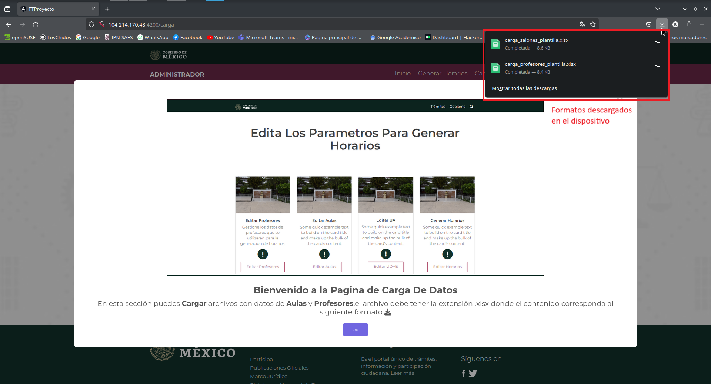
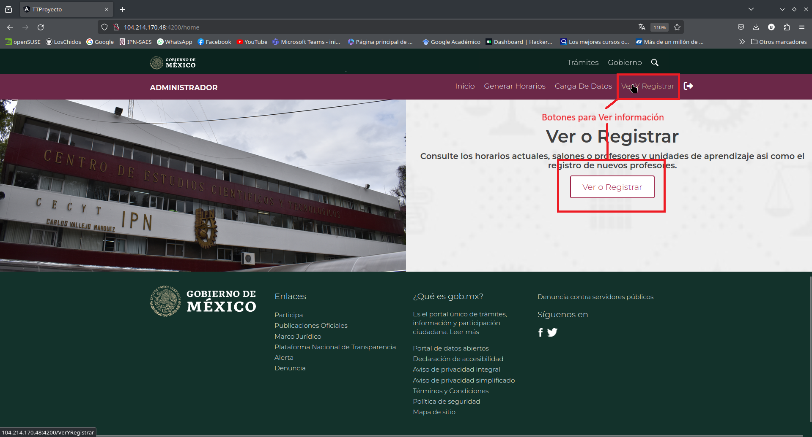
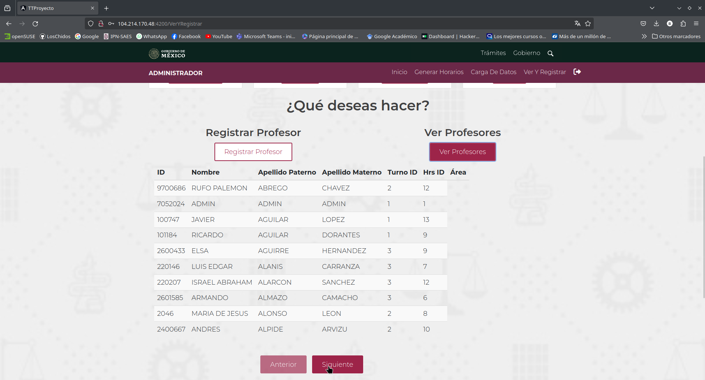
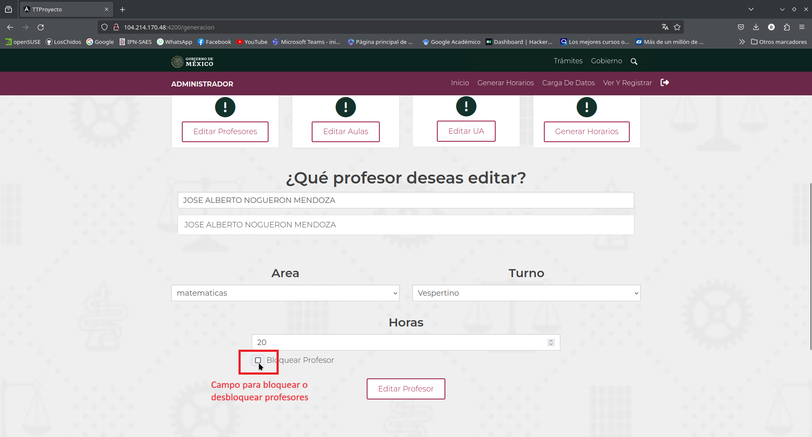
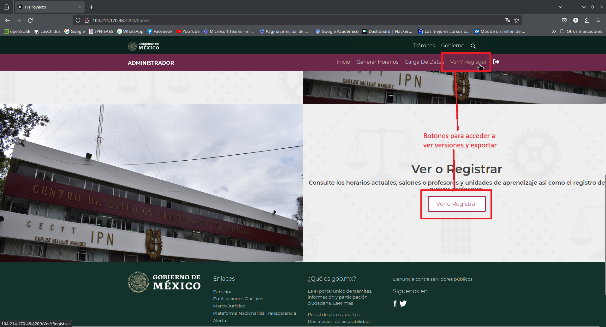
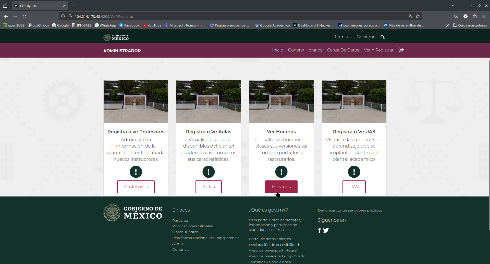
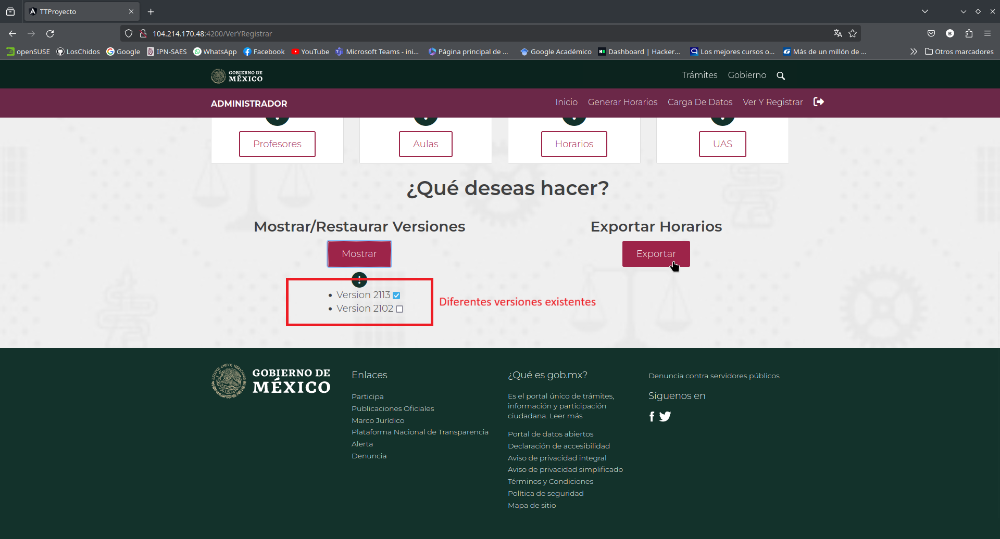

Prototipo de sistema web para la automatización de los
procesos de asignación de horarios y espacios de las instalaciones del
CECyT 10.
Martínez Martínez Carlos Pavel, Noguerón Mendoza José
Alberto, Torres Limón Fernando
01 de Septiembre del 2023
INSTITUTO POLITÉCNICO NACIONAL
ESCUELA SUPERIOR DE CÓMPUTO Trabajo Terminal No. 2024-A039 Manual de usuario del Prototipo de sistema web para la
automatización de los procesos de asignación de horarios y espacios de
las instalaciones del CECyT 10. Presentan: Martínez Martínez Carlos Pavel
Noguerón Mendoza José Alberto
Torres Limón Fernando Directora: M. en C. Moreno Galván Elizabeth
Mayo 2023
INSTITUTO POLITÉCNICO NACIONAL
ESCUELA SUPERIOR DE CÓMPUTO
SUBDIRECCIÓN ACADÉMICA No. de TT: 2024-A039Mayo del 2023 Manual de Usuario "Prototipo de sistema web para la automatización de los procesos
de asignación de horarios y espacios de las instalaciones del CECyT
10." Presentan: Martínez Martínez Carlos Pavel
Noguerón Mendoza José Alberto
Torres Limón Fernando Directora: M. en C. Moreno Galván Elizabeth
Resumen: En el presente documento se aborda la
propuesta de solución al problema de la gestión de carga académica por
medio de la generación de horarios, la cual es una tarea recurrente y
compleja debido a la cantidad de condiciones, variables y restricciones
que se deben considerar así como optimizar su distribución. Estas
variables consisten en la cantidad de profesores, asignaturas, grupos,
aulas y horas disponibles. Es razón por la cual se propone el desarrollo
de un sistema web, utilizando algoritmos genéticos y tecnología de la
nube, que facilite la asignación de espacios y horas en el caso
particular del Centro de Estudios Científicos y Tecnológicos
No.10
Palabras clave: Algoritmo genético, Generación
automática, Heurísticas metaheurísticas, Planificación de horarios,
Sistema web.1cmartinezm1606@alumno.ipn.mx2jnogueronm1800@alumno.ipn.mx3ftorresl1500@alumno.ipn.mx
INSTITUTO POLITÉCNICO NACIONAL
ESCUELA SUPERIOR DE CÓMPUTO Advertencia
“Este documento contiene información
desarrollada por la Escuela Superior de Cómputo del Instituto
Politécnico Nacional, a partir de datos y documentos con derecho de
propiedad y por lo tanto, su uso quedará restringido a las aplicaciones
que explícitamente se convengan.” La aplicación no convenida exime a la
escuela su responsabilidad técnica y da lugar a las consecuencias
legales que para tal efecto se determinen.
Información adicional sobre este reporte
técnico podrá obtenerse en: La Subdirección Académica de la Escuela
Superior de Cómputo del Instituto Politécnico Nacional, situada en Av.
Juan de Dios Bátiz s/n Teléfono: 57296000, extensión 52000. +
Objetivo del Sistema Web
Permitir la administración de profesores, aulas y unidades de
aprendizaje del CECyT No.10 Carlos Vallejo para automatizar la actividad
de generación y asignación de horarios de clase, por medio de un
Algoritmo Genético.
Módulo “Agregar”
Este módulo permite agregar profesores, aulas o unidades de
aprendizaje a la base de datos para posteriormente utilizarlos en la
generación de horarios. El ingreso de datos incluye validaciones
interactivas, que mantienen informado al usuario por medio de mensajes,
de los errores o resultados de las operaciones realizadas.
Módulo “Ver”
Este módulo permite consultar y observar los profesores, aulas o
unidades de aprendizaje existentes en la base de datos. También permite
a los profesores ver su horario de clases asignado.
Módulo “Editar o
Eliminar”
Este módulo permite consultar y editar o eliminar profesores, aulas o
unidades de aprendizaje existentes en la base de datos para
posteriormente utilizarlos o no en la generación de horarios. El ingreso
de datos incluye validaciones interactivas, que mantienen informado al
usuario por medio de mensajes, de los errores o resultados de las
operaciones realizadas.
Modulo “Algoritmo
Genético”
Este módulo permite configurar y ejecutar el algoritmo genético para
la generación de horarios. El ingreso de datos de incluye validaciones
interactivas, que mantienen informado al usuario por medio de mensajes,
de los errores o resultados de las operaciones realizadas.
Configuración: Permite configurar las condiciones de ejecución
del algoritmo genético.
Visualización: Permite observar los horarios resultantes de la
ejecución del algoritmo genético.
Exportado: Permite insertar en la base de datos los horarios
aprobados y asignarlos a su respectivo profesor.
Ingreso al Sistema
Desde el navegador web de su elección ingrese la siguiente dirección
en la barra de direcciones: http://104.214.170.48:4200/
A continuación se presenta la pantalla de inicio del sistema.
Importante
El sistema ha sido desarrollado para usarse en cualquier
navegador de internet basado en chromium o en Mozilla Firefox.
El sistema puede ser desplegado en una red local o sobre la
infraestructura del computo en la nube.
NOTA: En cualquiera de los dos casos anteriores debe
considerarse la modificación de la ruta de acceso.
Log in
Al iniciar el sistema se presenta la ventana de inicio de sesión, en
esta parte el usuario debe ingresar su Usuario y
Contraseña. La pantalla se muestra a continuación:
Usuario: El Usuario es el número de empleado del
usuario. El número de empleado es de tipo entero.
Contraseña: La contraseña de acceso es el RFC
del usuario. El RFC corresponde al formato de 13 caracteres:
4: Letras.
6: Números.
3: Caracteres entre letras y números.
Al seleccionar el botón “Entrar” los datos ingresados serán
validados. Si la información es correcta se le notificara que las
información introducida fue validad de forma correcta. La notificación
de validación correcta se presenta a continuación:
Campo vacio
Si intenta iniciar sesión sin ingresar su numero de empleado el
sistema mostrar la notificación que se presenta a continuación:
Credenciales incorrectas
En el caso de que el usuario y la contraseña no sean validadas de
satisfactoriamente el sistema mostrara la notificación mostrada a
continuación:
Letras en numero de empleado
NOTA: En el campo usuario solo se deben introducir
números. Si se ingresa algún carácter diferente el sistema notificara al
usuario el error.
En caso de introducir algún carácter diferente el sistema mostrara la
pantalla que se presenta a continuación:
Menu principal del
sistema para Profesores
Si el inicio de sesión se realizo con éxito y las credenciales
corresponden al usuario de tipo profesor el sistema le informara su rol
y mostrara el menu principal presentado a continuación:
Si eres profesor y deseas continuar dirígete a la sección “MANUAL DE
USUARIO PROFESORES” o selecciona el numero de sección a continuación 3.
Menu principal
del sistema para Administradores
Si a diferencia del caso anterior las credenciales corresponden al
usuario de tipo administrador el sistema le informara su rol y mostrara
el menu principal presentado a continuación:
Si eres administrador y deseas continuar dirígete a la sección
“MANUAL DE USUARIO ADMINISTRADORES” o selecciona el numero de sección a
continuación 4.
Recuperar Contraseña
Utilice esta opción toda vez que desee cambiar o recuperar la
contraseña de ingreso al sistema. Seleccione “Olvidaste tu contraseña”.
A continuación se muestra la pantalla donde se indica la localización de
la sección:
La nueva contraseña de cumplir con un formato especifico. El sistema
le indicara cual es el formato como se presenta a continuación:
Importante: La nueva contraseña debe contener al
menos 8 caracteres y estar compuesta por al menos uno de cada uno de los
siguientes tipos de carácter:
Letras mayúsculas.
Letras minúsculas.
Números.
Carácter especial. Donde se contemplan algunos como
(@$%*?&).
Para definir una nueva contraseña de ingresar su número de empleado y
la nueva contraseña que desea usar. A continuación se presenta los
campos que deben ser llenados:
Si la nueva contraseña cumple con los requisitos mínimos definidos
anteriormente el sistema mostrar la siguiente notificación:
NOTA: A partir de este punto para iniciar sesión
sera necesario utilizar la nueva contraseña.
Error cambio de contraseña
Si la nueva contraseña no cumple con los requisitos mínimos definidos
anteriormente el sistema mostrar la siguiente notificación, donde le
informa al usuario de nuevo el formato que debe cumplir:
NOTA: Si el procedimiento no se completa, para
iniciar sesión sera necesario utilizar la contraseña original.
Manual de Usuario Profesores
Si las credenciales de ingreso corresponden a un usuario de tipo
profesor el sistema le notificara y se mostrar la pantalla que se
presenta a continuación:
Al seleccionar el botón “Revisa tus horarios” el sistema
automáticamente realiza muestra en otra pestaña el horario asignado y lo
descarga en el dispositivo.
Ver y Exportar Horario
A continuación se presenta la pestaña donde se muestra el horarios
asignado al profesor. En este se muestra el día, la hora, el salón y la
unidad de aprendizaje a impartir:
Según la configuración del sistema el archivo sera exportado y
descargado en formato pdf en el dispositivo desde el cual se accede al
sistema. A continuación se muestra el documento en el dispositivo. Este
documento incluye lo mismo que se mostró el en navegador de
internet.
Manual de Usuario Administradores
Si las credenciales de ingreso corresponden a un usuario de tipo
administrador el sistema le notificara y se mostrar el menu principal
para administradores.
Carga masiva de datos
Para realizar una carga masiva de profesores o aulas en necesario
realizar los pasos listados a continuación:
1.- Seleccione el botón “Carga De Datos” en la barra superior o en el
menu. A continuación se muestra la pantalla del menu principal con las
opciones de acceso señaladas:
2.- El sistema mostrara la pantalla de bienvenida, se debe
seleccionar el botón de descarga para obtener los formatos de los
archivos de carga. En la siguiente imagen se señala la localización del
botón de descarga y la notificación del navegador que informa que se
descargaron 2 archivos xlsx:

NOTA: Los archivos deben respetar el contenido
solicitados en los archivos descargados. Estos archivos deben tener
exención .xlsx .
A continuación se muestran las columnas de la información solicitada
en el archivo “carga_salones_plantilla.xlsx” y
“carga_profesores_plantilla.xlsx”
3.- Seleccionar el botón “Elegir archivo” correspondiente al conjunto
de datos que se desea cargar y presionar “Abrir”. A continuación se
presenta el explorador de archivos donde se observan los dos
archivos:
4.- Seleccionar el botón “Subir Archivo”, el sistema notificara al
usuario que se cargo el archivo con éxito e insertara el contenido del
archivo a la base de datos. A continuación se presenta la notificación
que desplegara el sistema al subir un archivo de forma correcta:
Ver
Para consultar y observar la lista de profesores, aulas o unidades de
aprendizaje registradas es necesario acceder al menú “Ver o Registrar”.
Para esto es necesario seguir los siguientes pasos:
1.- Seleccione el botón “Ver o Registrar” en la barra superior o en
el menú. A continuación se muestra la pantalla del menú principal con
las opciones de acceso señaladas:

Posteriormente el sistema mostrara una notificación donde da un
resumen de lo que se puede realizar en esa sección, esto se muestra a
continuación:
2.- Al seleccionar “OK” en la sección anterior el sistema muestra el
menú donde nos permite agregar profesores 4.2.1, aulas 4.2.2 o unidades de aprendizaje 4.2.3. Este menú se muestra a
continuación:
Profesores
3.Profesores- Para poder ver la lista de profesores es necesario
seleccionar el botón “Profesores”. Como se muestra a continuación:
4.Profesores- Después debe seleccionar el botón “Ver Profesores”. A
continuación de presenta la pantalla y el botón que debe
seleccionar:
El sistema muestra en pantalla una lista de 10 de los profesores
registrados en la base de datos, ordenados de menor a mayor según su
numero de empleado (ID - Identificador dentro del sistema). Con los
botones en la parte inferior podemos navegar en el total de profesores
por grupos de 10 como se muestra a continuación:

Aulas
3.Aulas- Para poder ver la lista de aulas es necesario seleccionar el
botón “Aulas”. Como se muestra a continuación:
4.Aulas- Después debe seleccionar el botón “Mostrar Lista”. A
continuación de presenta la pantalla y el botón que debe
seleccionar:
El sistema muestra en pantalla una lista de 10 de las aulas
registrados en la base de datos, ordenadas de menor a mayor según su
numero de aula (ID - Identificador dentro del sistema). Con los botones
en la parte inferior podemos navegar en el total de aulas por grupos de
10 como se muestra a continuación:
Unidades de Aprendizaje
3.Unidades_de_Aprendizaje- Para poder ver la lista de unidades de
aprendizaje es necesario seleccionar el botón “Ver UAS”. Como se muestra
a continuación:
4.Unidades_de_Aprendizaje- Después debe seleccionar el botón “Mostrar
Lista”. A continuación de presenta la pantalla y el botón que debe
seleccionar:
El sistema muestra en pantalla una lista de 10 de las unidades de
aprendizaje registrados en la base de datos, ordenadas de menor a mayor
según su numero de UA y el semestre en el que se imparte. Con los
botones en la parte inferior podemos navegar en el total de profesores
por grupos de 10 como se muestra a continuación:
Registrar
Para Registrar algún profesor, aula o unidad de aprendizaje es
necesario acceder al menú “Ver o Registrar”. Para esto es necesario
seguir los siguientes pasos:
1.- Seleccione el botón “Ver o Registrar” en la barra superior o en
el menú. A continuación se muestra la pantalla del menú principal con
las opciones de acceso señaladas:
Posteriormente el sistema mostrara una notificación donde da un
resumen de lo que se puede realizar en esa sección, esto se muestra a
continuación:
2.- Al seleccionar “OK” en la sección anterior el sistema muestra el
menú donde nos permite agregar profesores 4.3.1, aulas 4.3.2 o unidades de aprendizaje 4.3.3. Este menú se muestra a
continuación:
Profesor
3.Profesores- Para poder registrar un nuevo profesor es necesario
seleccionar el botón “Profesores”. Como se muestra a continuación:
4.Profesores- Después debe seleccionar el botón “Registrar Profesor”.
A continuación de presenta la pantalla y el botón que debe
seleccionar:
5.Profesores- El sistema muestra en pantalla los campos donde debe
introducirse la información del profesor. Posteriormente debe
seleccionar el botón “Registrar Profesor”, como se muestra a
continuación:
Importante: La información debe seguir el siguiente
formato:
ID del Profesor: Corresponde al número de empelado. Debe ser un
número entero.
Nombre, Apellido Paterno y Materno: El nombre del
profesor.
RFC: Debe cumplir con el siguiente formato:
4: Letras.
6: Números.
3: Caracteres entre letras y números.
Turno: Seleccionar una opción.
Dictamen.
Horas Básicas y Horas Adicionales: Como número entero.
Área: Seleccionar la opción a la que pertenece.
Si la información ingresada es correcta y se realiza el registro del
nuevo profesor el sistema mostrar la notificación que se presenta a
continuación:
Aula
3.Aula- Para poder registrar una nueva aula es necesario seleccionar
el botón “Aulas”. Como se muestra a continuación:
4.Aula- Después debe seleccionar el botón “Agregar Aula”. A
continuación de presenta la pantalla y el botón que debe
seleccionar:
5.Aula- El sistema muestra en pantalla los campos donde debe
introducirse la información del aula. Posteriormente debe seleccionar el
botón “Guardar Aula”, como se muestra a continuación:
Importante: La información debe seguir el siguiente
formato:
Tipo de Salón: Seleccionar el tipo de salón.
Salón Descripción: El identificador del salón en el
sistema.
Capacidad del Salón: Debe ser un numero entero.
Si la información ingresada es correcta y se realiza el registro de
la nueva aula el sistema mostrar la notificación que se presenta a
continuación:
Unidad de Aprendizaje
3.Unidad_de_Aprendizaje- Para poder registrar una nueva unidad de
aprendizaje es necesario seleccionar el botón “Ver UAS”. Como se muestra
a continuación:
4.Unidad_de_Aprendizaje- Después debe seleccionar el botón “Añadir
Unidad de Aprendizaje”. A continuación de presenta la pantalla y el
botón que debe seleccionar:
5.Unidad_de_Aprendizaje- El sistema muestra en pantalla los campos
donde debe introducirse la información de la nueva UA. Posteriormente
debe seleccionar el botón “Guarda Unidad de Aprendizaje”, como se
muestra a continuación:
Importante: La información debe seguir el siguiente
formato:
Área: Seleccione el área a la que pertenece.
Unidad De Aprendizaje: El nombre de la UA.
Horas de la Unidad de Aprendizaje Semanal: La cantidad de horas
que debe impartirse la UA en la semana según el plan de
estudios.
Semestre: Seleccione el semestre al que pertenece. Para primer y
segundo semestre solo seleccionar un entero. En el caso de tercer
semestre ne adelante es necesario seleccionar un número entero si es de
tronco común o en entero con el decimal que representa la carera técnica
a la que pertenece:
#.0: Telecomunicaciones.
#.1: Metrología Y Control De Calidad.
#.2: Diagnostico y Mejoramiento Ambiental.
#.3: Mecatrónica.
Donde # representa uno de los siguiente números: [3,4,5,6]
Si la información ingresada es correcta y se realiza el registro de
la nueva Unidad de Aprendizaje el sistema mostrar la notificación que se
presenta a continuación:
Editar o Eliminar
Para Editar algún profesor, aula o unidad de aprendizaje es necesario
acceder al menú “Generar Horarios”. Para esto es necesario seguir los
siguientes pasos:
1.- Seleccione el botón “Generar Horarios” en la barra superior o en
el menú. A continuación se muestra la pantalla del menú principal con
las opciones de acceso señaladas:
Posteriormente el sistema mostrara una notificación donde da un
resumen de lo que se puede realizar en esa sección, esto se muestra a
continuación:
2.- Al seleccionar “OK” en la sección anterior el sistema muestra el
menú donde nos permite editar profesores 4.4.1, aulas 4.4.2, unidades de aprendizaje 4.4.3 o configurar el algoritmo genético 4.6. Este menú se muestra a
continuación:
Profesor
Editar
3.Profesores- Para poder editar a un profesor es necesario
seleccionar el botón “Editar Profesores”. Como se muestra a
continuación:
4.Profesores- Posteriormente se debe buscar al profesor mediante su
nombre, ingresando este en la barra de búsqueda. A continuación se
muestra un ejemplo:
5.Profesores- El sistema muestra en pantalla los campos que se pueden
editar del profesor seleccionado, como se muestra a continuación:
Importante: La información editable debe seguir el
siguiente formato:
Área: Seleccionar el área a la que pertenece el
profesor.
Turno: Seleccionar el turno del profesor.
Horas: Debe ingresar la cantidad de horas totales que debe
impartir el profesor.
6.Profesores- Al realizar las modificaciones de la información del
profesor se debe seleccionar el botón “Editar Profesor”, como se muestra
a continuación:
Si la información ingresada es correcta y se realiza la edición del
profesor, el sistema mostrar la notificación que se presenta a
continuación:
NOTA: No es posible eliminar profesores registrados
en el sistema, para que un profesor no sea considerado para la
generación de horarios es necesario bloquearlo. Revisar sección 4.5.
Aula
Editar
3.Aulas- Para poder editar un aula es necesario seleccionar el botón
“Editar Aulas”. Como se muestra a continuación:
4.Aulas- Posteriormente se debe buscar al aula mediante su
descripción, ingresando esta en la barra de búsqueda. A continuación se
muestra un ejemplo:
5.Aulas- El sistema muestra en pantalla los campos que se pueden
editar del aula seleccionada, como se muestra a continuación:
Importante: La información editable debe seguir el
siguiente formato:
Tipo de Salón: Debe seleccionar el tipo de salón
[salon,laboratorio]
Salón Descripción: Este es el identificador o nombre del aula
dentro del sistema.
Capacidad del Salón: Debe introducir el máximo de alumnos que
pueden tomar clase en el aula como número entero.
6.Aulas- Al realizar las modificaciones de la información del aula se
debe seleccionar el botón “Editar”, como se muestra a continuación:
Si la información ingresada es correcta y se realiza la edición del
aula, el sistema mostrar la notificación que se presenta a
continuación:
Eliminar
Si desea eliminar el aula seleccionada es necesario seleccionar el
botón “Eliminar”, como se presenta a continuación:
Si el aula es eliminada de forma correcta el sistema mostrara la
notificación mostrada a continuación:
Unidad de Aprendizaje
Editar
3.Unidad_de_Aprendizaje- Para poder editar una unidad de aprendizaje
es necesario seleccionar el botón “Editar UA”. Como se muestra a
continuación:
4.Unidad_de_Aprendizaje- Posteriormente se debe buscar la unidad de
aprendizaje mediante su nombre, ingresando esta en la barra de búsqueda.
A continuación se muestra un ejemplo:
5.Unidad_de_Aprendizaje- El sistema muestra en pantalla los campos
que se pueden editar de la unidad de aprendizaje seleccionada, como se
muestra a continuación:
Importante: La información editable debe seguir el
siguiente formato:
Área: Debe seleccionar el área la que pertenece la UA.
Horas de la Unidad de Aprendizaje Semanales: Se debe ingresar
como numero entero la cantidad de horas que debe impartirse la UA a la
semana, según se especifique en el plan de estudios.
Descripción de la Unidad de Aprendizaje: Ingresar el nombre de la
UA.
Semestre: Seleccione el semestre al que pertenece. Para primer y
segundo semestre solo seleccionar un entero. En el caso de tercer
semestre ne adelante es necesario seleccionar un número entero si es de
tronco común o en entero con el decimal que representa la carera técnica
a la que pertenece:
#.0: Telecomunicaciones.
#.1: Metrología Y Control De Calidad.
#.2: Diagnostico y Mejoramiento Ambiental.
#.3: Mecatrónica.
6.Unidad_de_Aprendizaje- Al realizar las modificaciones de la
información de la unidad de aprendizaje se debe seleccionar el botón
“Editar”, como se muestra a continuación:
Si la información ingresada es correcta y se realiza la edición de la
UA, el sistema mostrar la notificación que se presenta a
continuación:
Eliminar
Si desea eliminar la unidad de aprendizaje seleccionada es necesario
seleccionar el botón “Eliminar”, como se presenta a continuación:
El sistema solicitara confirmación para eliminar la unidad de
aprendizaje. Se debe seleccionar “Sí, eliminar!”. A continuación se
muestra la notificación:
Si la unidad de aprendizaje es eliminada de forma correcta el sistema
mostrara la notificación mostrada a continuación:
Bloquear-Desbloquear Profesor
En caso de requerir que un profesor no sea considerado para la
generación de horarios, ya sea por baja temporal o permanente. Debemos
Bloquearlo o en caso contrario Desbloquearlo siguiendo los siguientes
pasos:
1.- Seleccione el botón “Generar Horarios” en la barra superior o en
el menu. A continuación se muestra la pantalla del menu principal con
las opciones de acceso señaladas:
El sistema mostrar una alerta con la descripción de lo que podemos
realizar en esta sección como se muestra a continuación:
2.- Seleccionar el botón “Editar Profesores”, como se muestra a
continuación.
3.- En el cuadro de búsqueda debe ingresar el nombre del profesor que
desea bloquear o Desbloquear. El sistema muestra las conciencias con
forme de ingresa el nombre. Por ultimo debe seleccionar el nombre del
profesor como se muestra a continuación:
El sistema muestra la información editable del profesor y el botón
“Bloquear Profesor”. A continuación se muestra la localización del
botón:

Importante: Si el botón se encuentra seleccionado
significa que el profesor esta bloqueado y no sera considerado para la
generación de horarios. Si desea que el profesor sea considerado
necesita deseleccionar el botón.
Bloquear
4.1.- Al seleccionar el botón se bloquea al profesor y el sistema
muestra la notificación presentada a continuación:
Desbloquear
4.2.- Al deseleccionar el botón se desbloquea al profesor y el
sistema muestra la notificación presentada a continuación:
Algoritmo Genético - AG
El algoritmo genético es el modulo principal del sistema, ya que este
se encarga del proceso de generación de horarios siguiendo la
configuración definida por el administrador. A continuación se describen
los procesos para la generación de horarios y exportado de estos.
Generación de
horarios y configuración del AG
Antes de generar horarios en necesario configurar los parámetros
sobre los que trabajará el algoritmo, para esto siga los siguientes
pasos:
1.- Seleccione el botón “Generar Horarios” en la barra superior o en
el menú. A continuación se muestra la pantalla del menú principal con
las opciones de acceso señaladas:
Posteriormente el sistema mostrara una notificación donde da un
resumen de lo que se puede realizar en esa sección, esto se muestra a
continuación:
2.- Al seleccionar “OK” en la sección anterior el sistema muestra el
menú donde nos permite editar profesores 4.4.1, aulas 4.4.2, unidades de aprendizaje 4.4.3 o configurar el algoritmo genético.
Este menú se muestra a continuación:
Importante: Es necesario que la lista de profesores,
aulas y unidades de aprendizaje ya contengan la información que el
algoritmo utilizara para generar los horarios.
3.- Para configurar las variables de funcionamiento del algoritmo es
necesario seleccionar el botón “Generar Horarios”.
4.- El sistema muestra en pantalla los campos de configuración del
algoritmo genético, como se muestra a continuación:
5.- Al insertar la información en los campos se debe seleccionar el
botón “Generar Horarios”, como se muestra a continuación:
Importante: La información de configuración debe
seguir el siguiente formato y consideraciones: Ejecución del
algoritmo
Número Máximo De Generaciones: Número entero que representa la
cantidad de veces que se repetirá el algoritmo. Se recomienda un numero
superior a 500 e inferior a 1000. Estos nos permiten obtener soluciones
medianamente aceptable en poco tiempo.
Probabilidad de Cruce y Mutación: Son operaciones que permiten
que los diferentes horarios generados puedan modificar algunos de sus
parámetros para mejorar aumentar la variabilidad de las soluciones. Al
ser probabilidades estos deben representar una parte de un 100% por lo
tanto se configuran valores complementarios que sumen 10. En la
siguiente tabla se muestran las parejas de valores recomendados para
maximizar la efectividad del algoritmo:
Probabilidad
Pares de valores
Mutación
3
4
5
6
7
Cruzamiento
7
6
5
4
3
Periodo: Se debe seleccionar el periodo de clases del que se
desea obtener los horarios. Periodo 1 genera horarios de primer, tercero
y quinto semestre. Periodo 2 genera horarios de segundo, cuarto y sexto
semestre.
Generación de horarios
Turno: Seleccionar el Turno para el que se desea se generen los
horarios.
Número de Grupos de 1er o 2do Semestre: Número entero que
representa los grupos que desea que se generen para primer o segundo
semestre según corresponda al periodo configurado.
Número de Grupos de 3er o 4to Semestre: Al contar con cuatro
carreras técnicas en las instalaciones es necesario especificar el
número de grupos para cada una de estas.
Grupos de Telecomunicaciones: Número de grupos que se desean del
semestre y carrera al que pertenece el campo.
Grupos de Metrologia Y Control De Calidad: Número de grupos que
se desean del semestre y carrera al que pertenece el campo.
Grupos de Diagnostico y Mejoramiento Ambiental: Número de grupos
que se desean del semestre y carrera al que pertenece el campo.
Grupos de Mecatrónica: Número de grupos que se desean del
semestre y carrera al que pertenece el campo.
Número de Grupos de 5to o 6to Semestre: Al contar con cuatro
carreras técnicas en las instalaciones es necesario especificar el
número de grupos para cada una de estas.
Grupos de Telecomunicaciones: Número de grupos que se desean del
semestre y carrera al que pertenece el campo.
Grupos de Metrologia Y Control De Calidad: Número de grupos que
se desean del semestre y carrera al que pertenece el campo.
Grupos de Diagnostico y Mejoramiento Ambiental: Número de grupos
que se desean del semestre y carrera al que pertenece el campo.
Grupos de Mecatrónica: Número de grupos que se desean del
semestre y carrera al que pertenece el campo.
Si la información ingresada es correcta, se realiza la ejecución del
algoritmo genético, el sistema mostrar la notificación que se presenta a
continuación:
Al finalizar la ejecución del algoritmo y la generación de horarios
el sistema notificara al usuario mostrando la notificación que se
presenta a continuación:
NOTA: Para ver los horarios generados y exportarlos
revisar la siguiente sección:
Visualización de
versiones y exportado de horarios
Para Visualizar las versiones de horarios generados y Posteriormente
exportarlos es necesario acceder al menú “Ver o Registrar”. Para esto es
necesario seguir los siguientes pasos:
1.- Seleccione el botón “Ver o Registrar” en la barra superior o en
el menú. A continuación se muestra la pantalla del menú principal con
las opciones de acceso señaladas:

Posteriormente el sistema mostrara una notificación donde da un
resumen de lo que se puede realizar en esa sección, esto se muestra a
continuación:
2.- Al seleccionar “OK” en la sección anterior el sistema muestra el
menú donde nos permite ver o registrar profesores, aulas, unidades de
aprendizaje o ver horarios. Este menú se muestra a continuación:

Importante: Es necesario que se haya ejecutado de
forma correcta el algoritmo al menos una vez.
3.- Al seleccionar el botón “Horario” el sistema mostrar el siguiente
menú:
4.- Al seleccionar el botón “Mostrar” el sistema muestra las
versiones existentes en el sistema, en orden descendente desde la más
reciente hasta la ams antigua. Como se observa a continuación:

Importante: La versión seleccionada por defecto es
la más reciente, si se selecciona una distinta a esta, el sistema
configurara como la versión a exportar.
Exportar: Para poder ver el horario general de
clases resultante de la ejecución del algoritmo genético es necesario
exportarlo a formato pdf. Para esto se debe continuar con los siguientes
pasos:
5.- Para poder exportar el horario general de clases y determinar si
es una solución viable demos seleccionar el botón “Exportar”. Como se
presenta a continuación:
6.- El sistema exportara la versión de horarios seleccionada a
formato pdf. Posteriormente lo mostrara en otra pestaña del navegador
web y lo descargara en el dispositivo desde el que se accede al sistema
como se presenta a continuación: